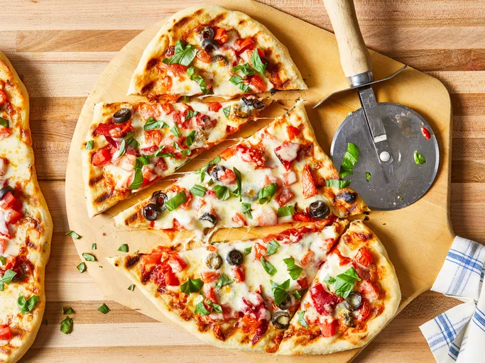

Pizza On The Grill

Pizza On The Grill
pizz on the grill is a fantastic way to make pizza at home
The heat of a hot grill is a perfect match for a professional pizza oven
Learn the tricks for making and grilling pizza from scratch with this recipe
ingredient
Steps
- Gather all ingredients.
- Make dough: Pour warm water into a large bowl; dissolve yeast and sugar in warm water. Let stand until yeast softens and begins to form a creamy foam, about 5 to 10 minutes.
- Mix in flour, 1 tablespoon olive oil, and salt until dough pulls away from the sides of the bowl.